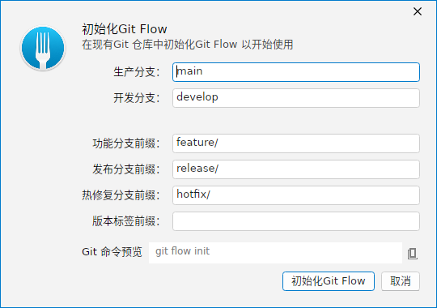
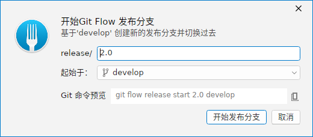
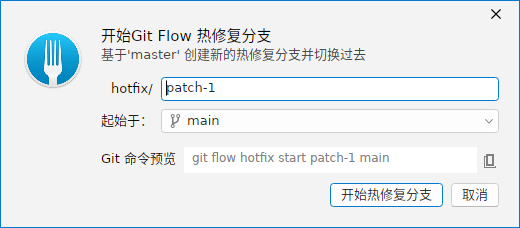

GitFlow 是一套基于分支的功能开发流程：常驻 develop 分支汇集开发，从它派生 feature/ 功能分支；临近发布时从 develop 派生 release/ 分支；线上紧急修复从 main 派生 hotfix/。ForkPlus 为这些操作提供了图形化窗口，会自动生成对应的 git flow 命令并给出命令预览。
小贴士：GitFlow 操作会调用
git-flow 插件。若仓库尚未初始化 git-flow，请先在下方「初始化 GitFlow」窗口完成初始化；初始化信息（主分支 main、开发分支 develop、功能前缀 feature/）会预填为常用默认值。初始化 GitFlow
首次使用前，打开「初始化 GitFlow」窗口。ForkPlus 会自动预填：
- 主分支 Master：
main（生产分支，通常为默认分支）。 - 开发分支 Develop：
develop（日常集成开发的分支）。 - 功能分支前缀 Feature Prefix：
feature/。
窗口下方实时显示将执行的命令预览（git flow init）。确认后提交即完成初始化。

功能分支 Feature Start
在已初始化的仓库中，打开「开始新功能」窗口，输入功能分支名（如 login）。ForkPlus 据此生成 git flow feature start login，从 develop 派生一个名为 feature/login 的分支并检出。功能开发完成后，可再用对应的「完成功能」操作合并回 develop。
发布分支 Release
功能开发告一段落、准备发布时，通过「开始发布」窗口从 develop 派生 release/<版本号> 分支。在发布分支上只做版本号调整与 bug 修复，不新加功能。

热修复分支 Hotfix
线上出现紧急问题时，从 main 派生 hotfix/<名称> 分支（如 patch-1），修复后同时合并回 main 与 develop，保证两端都包含本次修复。

注意：feature / release / hotfix 的「开始」窗口都只负责创建并检出新分支；对应的「完成」（finish）操作会执行合并与清理，属于较重的流程动作，请确认当前分支与工作区状态后再执行。
使用建议
- 保持
develop始终可部署：功能成熟后再合并进去。 - 每个功能一个独立
feature/分支，便于并行开发与回滚。 - 发布版本号语义化（如
2.0），便于热修复回溯。